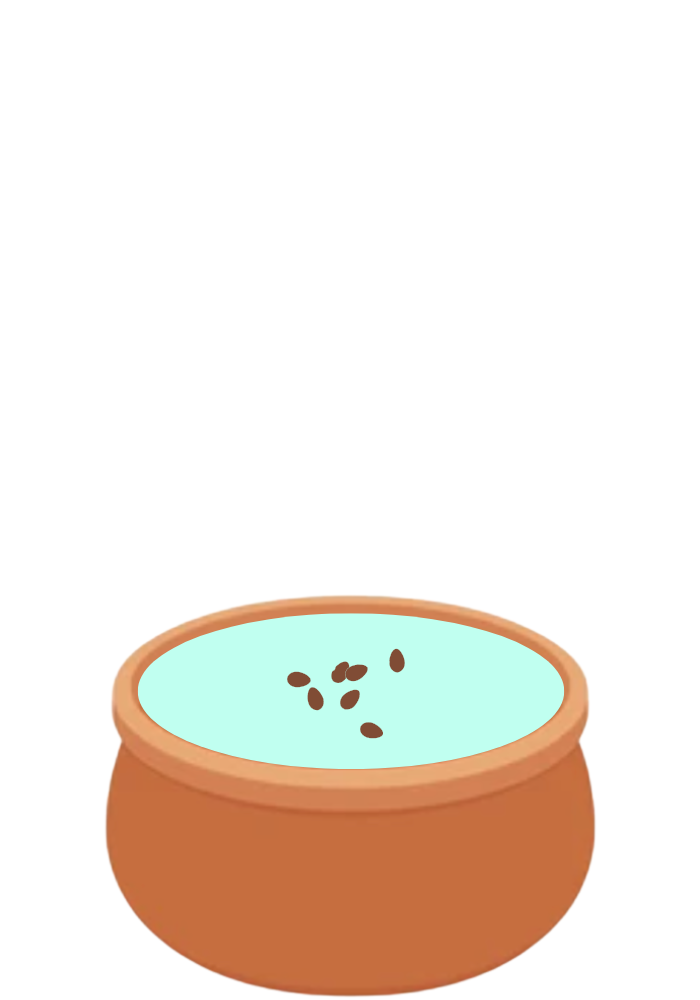

Come here and complete tasks by the end of the day to grow your lotus.
Lotus Grown:

Daily Tasks
Eaten 3 meals a day
Each meal is a balanced diet consisting of all 5 of the food groups (Vegetables & beans (legumes), Fruit, Grains and cereals, Meat, poultry, fish, eggs, beans/legumes, tofu, nuts, seeds, Milk, cheese, yogurt)
Exercise for at least 40 minutes and less than 2 hours per day
Sleep for more or less 8 hours per day
Has someone available to give emotional support and be understanding
Has someone who can respect and openly communicate with you
Has someone who you can trust and care for you
Have set boundaries between self-care and work activities
Has good time management
Focus on personal health over all
Have addressed stressful events and how you’re reacting, and come up with relaxation techniques to manage stress. (slow breathing, muscle relaxation, mindfulness, meditation, yoga, exercise)